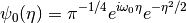

Wavelet Analysis Example - Niño3 SST¶
This is the final result:

How can anyone turn a 1D to 2D information? The code will explain to you!
The code is structed in two scripts:
- lib_wavelet.py : python’s functions library
- wavetest.py : call functions and plot
+----------------+
| wavetest.py |
+----------------+
|
+----------------+
| lib_wavelet.py |
+----------------+
|
+----------------+ +----------------+
| def wavelet |--| def wave_signif|
+----------------+ +----------------+
|
+----------------+ +----------------+
| def nextpow2 |--| def wave_bases |
+----------------+ +----------------+
Note
The Morlet wavelet is used as default in this code.
Building the puzzle ...
1. You have to choose the wavelet function¶
To be called a wavelet, the function (psi) has to satisfy the admissibility condition:
- “(...) for an integrable function, means that its average should be zero” (Farge, 1992).
- Wavelet function must have energy equal to one. “This ensures that the wavelet function has compact support(e-folding time),ensuring spatial location.”(Domingues et al, 2012).
The most popular wavelet function was created by Jean Morlet in 1980, a French research scientist working on seismic data analysis (Farge, 1992),whose complex function satisfied the Heseinberg-type equality. This means the Morlet wavelet allows to analyze the phase and modulus of the decomposed signal (Domingues et al, 2012) and localized time and frequency in the same extent.
In the following, the Morlet wavelet equation proposed by Torrence and Compo (1998) - a plane wave modulated by Gaussian envelope of unit width (Farge, 1992) - Morlet wavelet:

- Where:
omega_{0} : nondimensional frequency - time/scale resolution is adjust by this param (Maraun and Kurths, 2004)
eta : nondimensional parameter of time
The wavelet scale and the Fourier frequency are not direct reciprocals of each other, so, one has to rescale the result of wavelet analysis with a factor depending on the mother wavelet (Maraun and Kurths, 2004). The normalization for Morlet wavelet (Torrence and Compo, 1998; Maraun and Kurths, 2004):

The Morlet wavelet is only marginally admissible (zero average),so some small correction terms are added (Farge, 1992).In practice, for omega0 (k0 in the code) = 6, s.f = 1 (Maraun and Kurths, 2004).